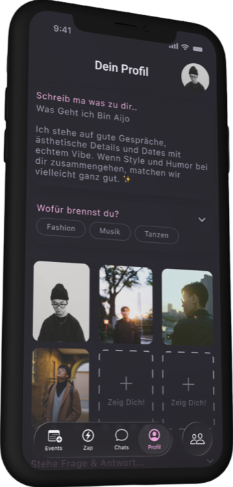
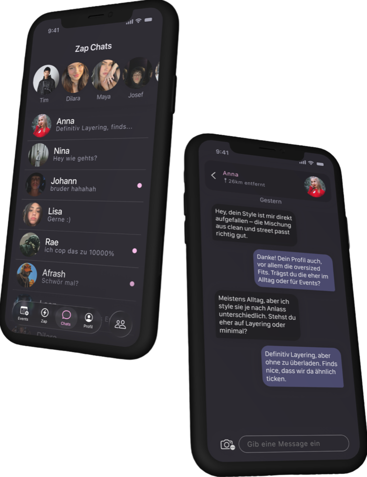
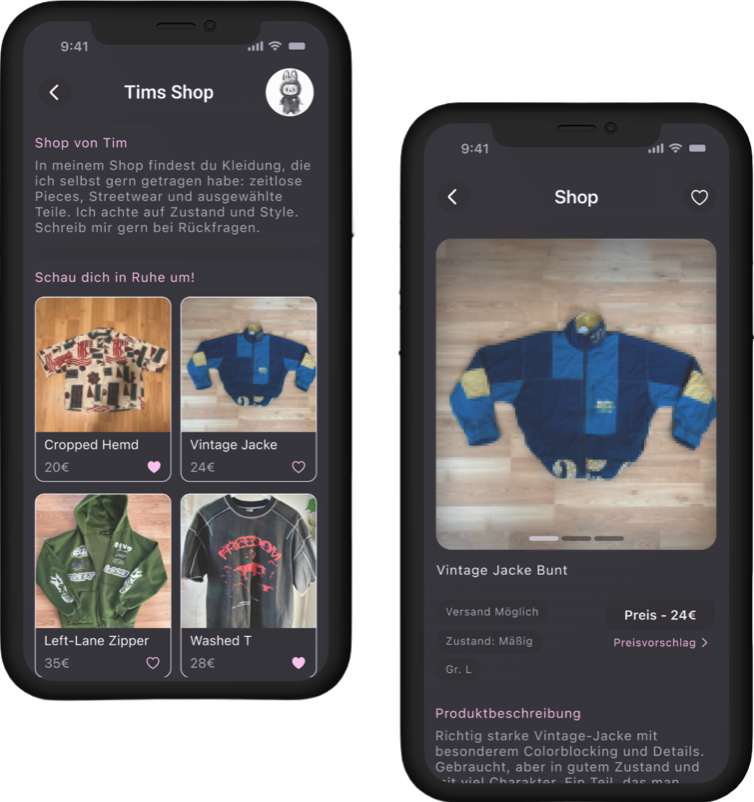
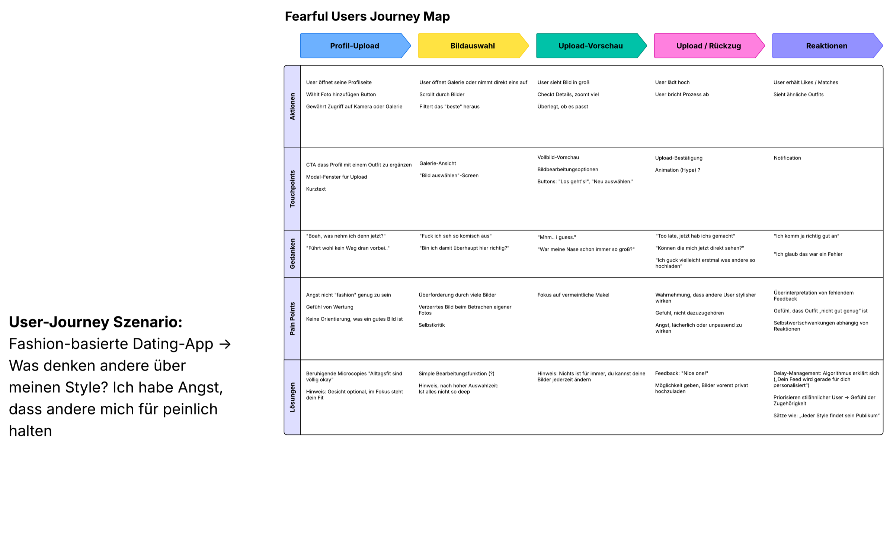
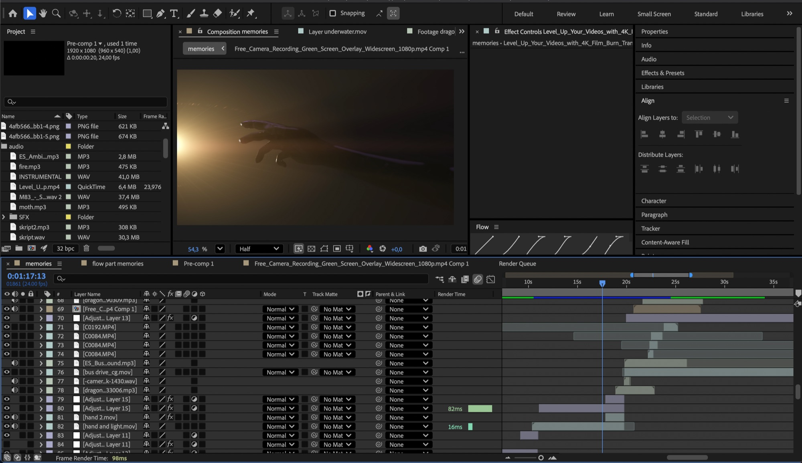
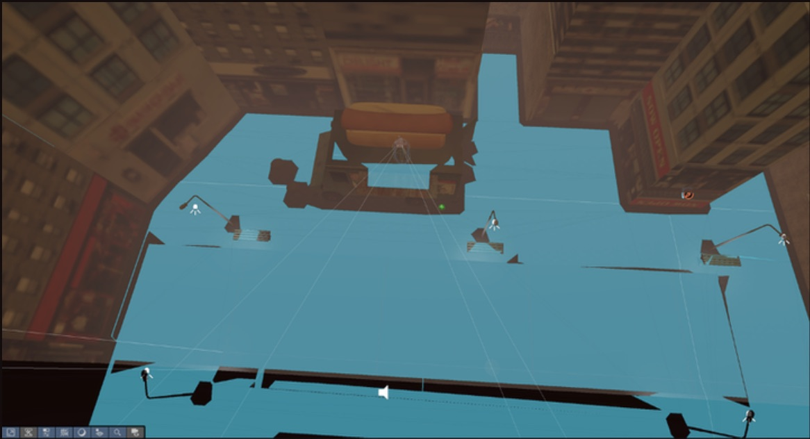
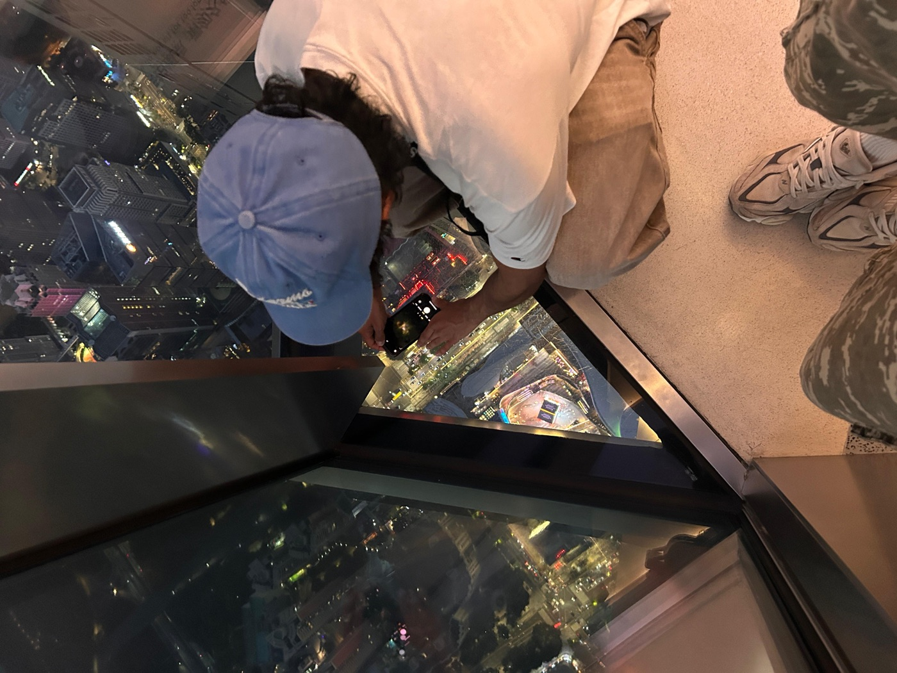

Zap



Shopping and connecting, in one app. What you buy shapes who you meet.
- Year
- 2026
- Discipline
- UX / UI
- Team
- Duo project
- Tools
- Figma, Jitter
Style is identity.
Shopping and dating don’t seem to belong together. In Zap, they feed each other: the clothes you buy shape the people you’re shown, whether for dating or friendship. Similar style becomes the icebreaker. Know the clothes, know the people.

memories
A short film about nostalgia — the kind that makes you idealize the past a little too much.
- Year
- 2026
- Discipline
- 3D Animation
- Team
- Solo
- Tools
- Blender, After Effects, DaVinci Resolve
Dwelling in memories is beautiful — until you get lost in them.

HotDawgs
A hot dog stand simulator. Simple premise, surprisingly stressful.
- Year
- 2026
- Discipline
- 3D Game
- Team
- Duo — environment & code
- Tools
- Unity, C#
Every customer is an agent with a life of its own.
SpawningRoutingWaitingLeaving

About
I’m a Media and Interaction Design student based in Osnabrück, currently enrolled in my fifth semester. I love bringing my ideas to life and presenting them in creative ways.
Besides my studies I’m working as a Community Manager overseeing social media accounts of brands such as Condor, OBI and DGB. At some point, I would love to be involved in productions such as films, as storytelling and conveying emotions are my greatest passions.

- 10/2024 — PresentHochschule OsnabrückMedia and Interaction Design
- 2014 — 2023Gymnasium HarsewinkelAllgemeine Hochschulreife
- 08/2024 — PresentMUUUH! GroupCommunity Manager
- 05/2024 — 08/2024WÖRK.APPSocial Media Manager — Intern
- 04/2023 — 10/2023Hotel-Residenz KlosterpforteWaiter
- Figma
- Jitter
- Blender
- After Effects
- DaVinci Resolve
- Unity / C#
Contact
Projects, internships or just a hello — write me.
marlon.lutete@gmail.comOsnabrück, Germany